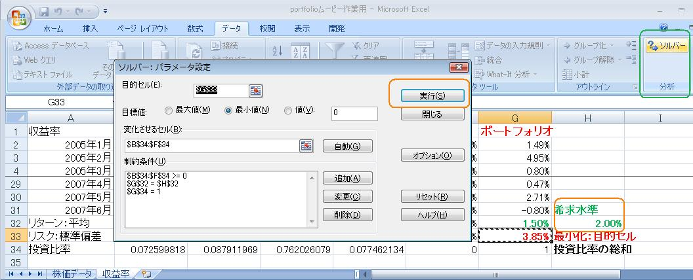
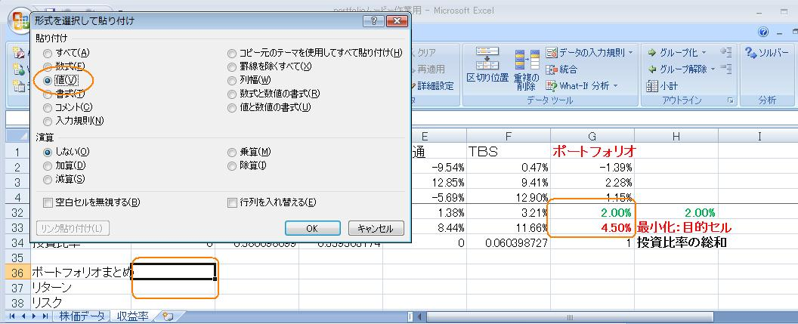

富山大学経済学部
経営モデル分析
学習ユニット〜マーコビッツのＭＶモデルと最適ポートフォリオ〜
ユニット６
II. マーコビッツのＭＶモデル
- リターンのターゲットを1.5％にしたときの、最適ポートフォリオ（リスク最小ポートフォリオ）を求めなさい。
- リターンのターゲットを2.0％にしたときの、最適ポートフォリオ（リスク最小ポートフォリオ）を求めなさい。
ソルバー再呼び出し
希求水準のセルを手入力で2.0％に変えて、ソルバー呼び出し→実行

結果はコピーして【編集】→【形式を選択してペースト】（値のラジオボタンにチェック）しておきましょう（メモ・メモ）
